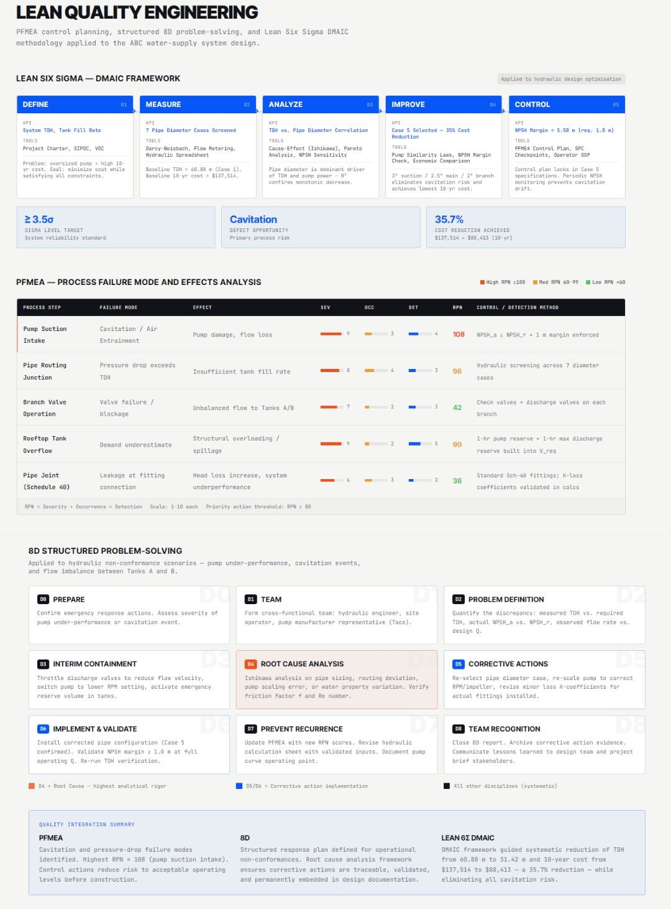

About Me
Fourth-year Mechanical Engineering student with strong experience in project coordination, data analysis, and manufacturing systems. Focused on optimizing workflows, improving operational efficiency, and delivering data-driven engineering solutions.
Projects
MARS Rocket Competition – Project Management & Flight Optimization
Key Impact: Achieved ~300 m apogee with stable flight (1.5–2.5 calibers), validating aerodynamic and structural design.
Tools: SolidWorks, MATLAB, OpenRocket
Led a 6-member multidisciplinary team, managing timelines and tracking milestones to ensure successful design, testing, and launch execution under strict constraints.

Industrial Fluid System Optimization
Key Impact: Reduced TDH from 60.9 m → 31.4 m, achieving 35.7% cost reduction (~$137k → ~$88k) while eliminating cavitation risk through NPSH validation.
Tools: Excel, Power BI, MATLAB
Applied hydraulic analysis (Darcy–Weisbach, TDH, NPSH) and evaluated multiple system configurations to optimize performance and cost. Integrated Lean Six Sigma methodologies (DMAIC, PFMEA, 8D) to identify failure modes, reduce risk, and support structured process improvement.


Manufacturing & Process Analysis
Key Impact: Improved workflow efficiency and process consistency through Lean analysis and structured process evaluation.
Tools: Excel, Lean Six Sigma, Process Mapping
Applied Lean and 5S principles to analyze workflows, identify inefficiencies, and improve process consistency and operational efficiency.


Relevant Coursework
Fluid Mechanics I & II, Thermodynamics I & II, Heat Transfer, Manufacturing Fundamentals, Statistics, Engineering Economics, Mechanics of Machines
Technical Skills
Data & Tools: Microsoft Suite (Excel, PowerPoint, Word), Power BI (Power Query, DAX), SolidWorks (CSWP)
Programming: C, MATLAB, Python
Engineering: Data Analysis, Lean Six Sigma (DMAIC), PFMEA, 8D Problem Solving, 5S, Process Optimization
Additional: Project Management, Workflow Optimization, Performance Tracking
Resume
LinkedIn: View Profile
Contact
Email: rayankotowaroo@gmail.com
Phone Number: +1 (647) 636-0715